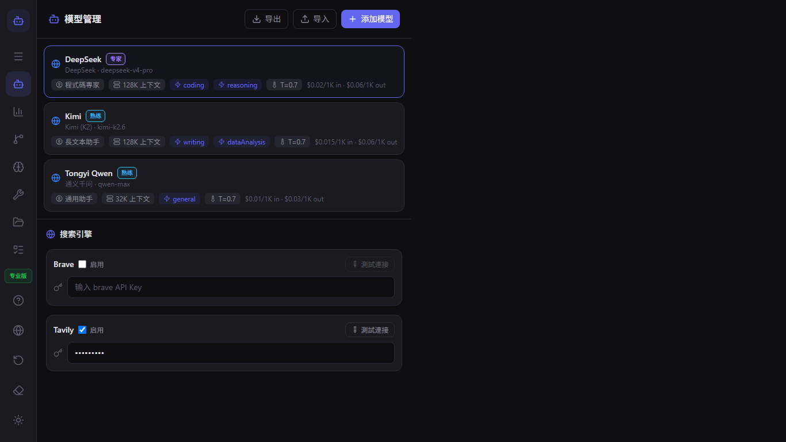
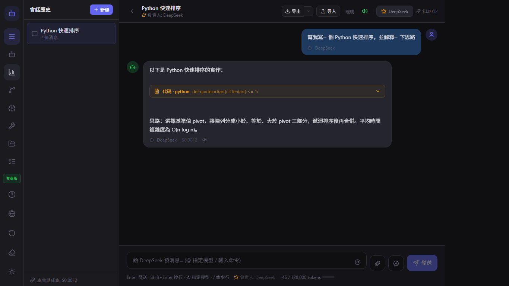
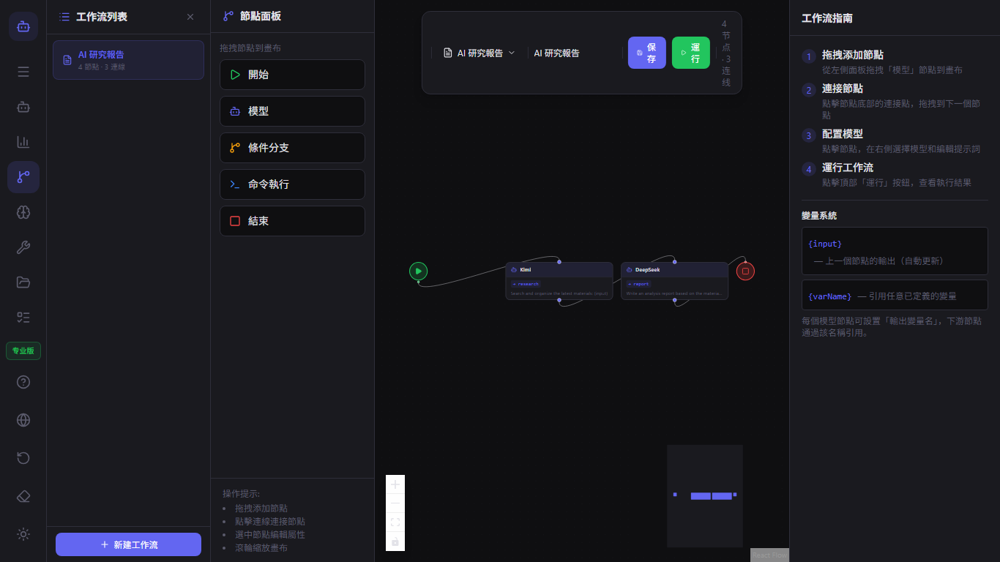
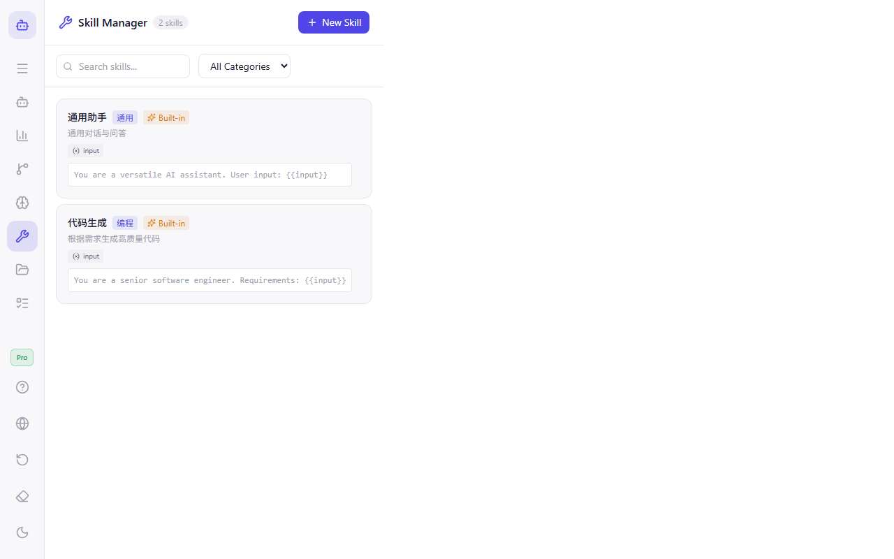
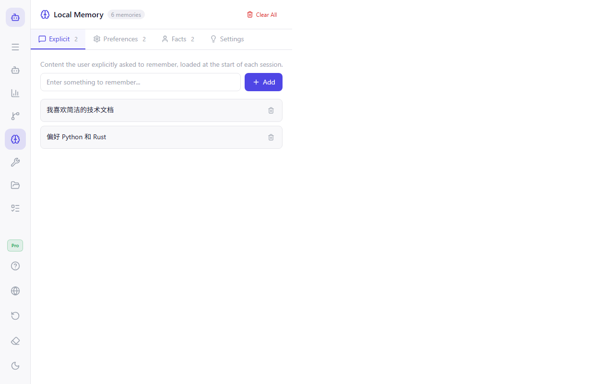
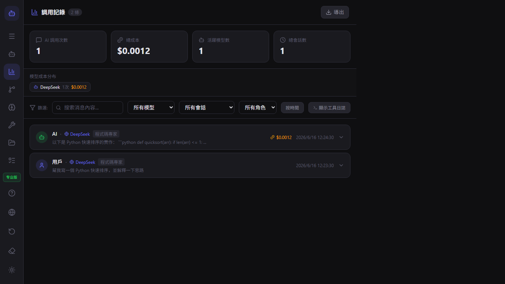
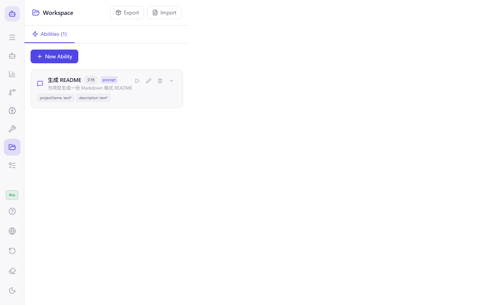

ModelFlow 用戶指南
歡迎使用 ModelFlow。本指南涵蓋從初次啟動到進階多模型工作流程的所有內容。
快速入門
- 從 Microsoft Store 下載 ModelFlow。
- 開啟應用程式並完成新手引導。
- 在模型管理員中新增您的第一個模型。
- 開始對話並輸入
@model-name來切換模型。
模型管理
使用模型管理員來新增文字、圖片、影片和音訊模型。您可以為每個模型設定提供者、API 金鑰、角色、上下文視窗和費用上限。

對話與 @ 提及
輸入 @ 後接模型名稱，即可將下一則回覆導向該模型。您可以在同一個對話中串接多個模型。

工作流程
開啟工作流程編輯器來建立視覺化流程。將模型節點、條件節點和指令節點拖曳至畫布，然後連接它們。

外掛程式
ModelFlow 支援已驗證的外掛程式和社群外掛程式。從外掛程式管理員安裝外掛程式，或自行開發。

本機 CLI 與工具
模型可以執行本機指令、讀取檔案和列出目錄。在對話中輸入 /tool 或在工作流程中加入指令節點。

通話記錄與費用
通話記錄會追蹤每一次 AI 通話、工具執行、Token 使用量和預估費用。匯出記錄以供分析。

設定與隱私
ModelFlow 採用本機優先架構。您的對話、模型設定和外掛程式都儲存在您的電腦上。在設定中變更語言、工作區和匯出資料。
